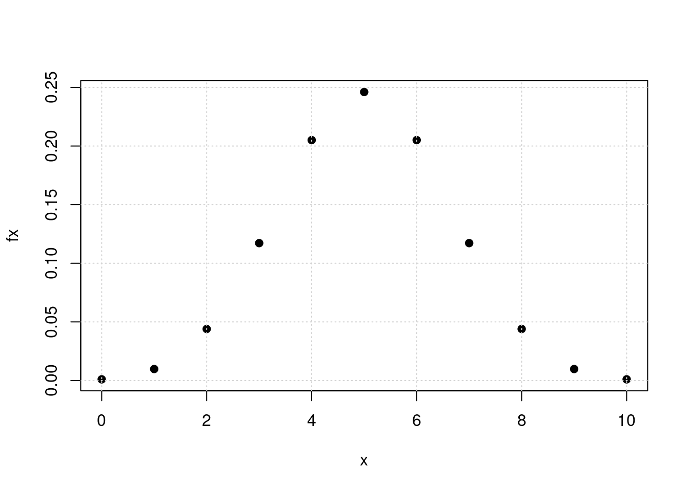
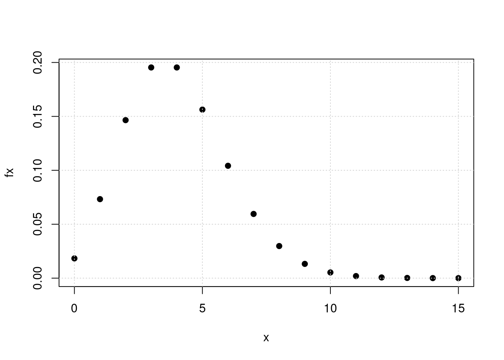

- Para una variable aleatoria con distribución binomial \(X \sim binom(x, n=10, p=0.5)\) . Determine: la función de distribución asociada a \(X\).
- \(P(X = 5)\)
- \(P(X \leq 2)\)
- \(P(3\leq X <5)\)
- \(P(X\geq 8)\)
- Construya la gráfica de \(f_{_{X}}(x)\)
# Distribución binomial
# X : número de éxitos en n ensayos
# f(x) dbinom(x, size, prob)
# F(x) pbinom(q, size, prob, lower.tail = TRUE)
# Percentil qbinom(p, size, prob, lower.tail = TRUE)
# aleatorio rbinom(n, size, prob)
cat("P(X=5)=",dbinom(5,10,0.50), " ")
## P(X=5)= 0.2460938
cat("P(X<=2)=",pbinom(2,10,0.50), " ")
## P(X<=2)= 0.0546875
cat("P(3<=X<5)=",dbinom(3,10,0.50)+dbinom(4,10,0.5)," ")
## P(3<=X<5)= 0.3222656
cat("P(X>=8)=",pbinom(7,10,0.50, lower.tail = FALSE))
## P(X>=8)= 0.0546875
x=0:10
fx=dbinom(x,10,0.50)
plot(x,fx, pch=19)
grid()

- Suponga que X tiene una distribución Poisson con media \(\lambda=4\) (\(X \sim pois(x,\lambda=4)\)). Determine:
- \(P(X = 0)\)
- \(P(X = 4)\)
- \(P(X \geq 2)\)
- \(P(X \leq 2)\)
- Construya la gráfica de \(f_{_{X}}(x)\)
# Distribución Poisson
# X : número de eventos que ocurren por unidad de tiempo, longitud, superficie o volumen
# f(x) dpois(x, lambda)
# F(x) =P(X<=x) ppois(q, lambda, lower.tail = TRUE)
# Percentil qpois(p, lambda, lower.tail = TRUE)
# aleatorio rpois(n, lambda)
cat("(a) P(X = 0)",dpois(0,4)," ")
## (a) P(X = 0) 0.01831564
cat("(b) P(X = 4)",dpois(4,4)," ")
## (b) P(X = 4) 0.1953668
cat("(c) P(X=>2)=",ppois(1,4,lower.tail = FALSE)," ")
## (c) P(X=>2)= 0.9084218
cat("(d) P(X<=2)=",ppois(2,4))
## (d) P(X<=2)= 0.2381033
x=0:15
fx=dpois(x,4)
plot(x,fx, pch=19)
grid()

- Sea una variable geométrica \(X\sim geomn,(x,p=0.05)\)
- \(P(X = 1)\)
- \(P(X \leq 2)\)
- \(P(X =8)\)
- \(P(X\geq 2)\)
- Construya la gráfica de \(f_{_{X}}(x)\)
# Distribución geometrica
# X : numero del ensayo donde ocurre el primer exito
# en R x representa el numero de fracasos antes de obtener el primer exito
# f(x) dgeom(x, prob)
# F(x) pgeom(q, prob, lower.tail = TRUE)
# Percentil qgeom(p, prob, lower.tail = TRUE)
# aleatorio rgeom(n, prob)
cat("(a) P(X=1)=",dgeom(0,0.05), " ")
## (a) P(X=1)= 0.05
- Suponga que X tiene una distribución hipergeometrica con \(N=100\), \(n=4\) y \(K=20\). (\(X\sim hyper(x,N=100,n=4,k=20)\)) Determine:
- \(P(X = 1)\)
- \(P(X = 6)\)
- \(P(X \geq 1)\)
- \(P(X = 4)\)
- Construya la gráfica de \(f_{_{X}}(x)\)
Nota: En este caso se debe realizar una conversion de los parametros para utiliar la funcion dhyper de R m = K N = m + n K = n Para este caso : m=20, n=80, k=4 —
# Distribución hipergeometrica
# X : número de éxitos encontrados en una muestra de tamaño n (sin orden, sin repetición),
# extraída de una urna que contiene N elementos de los cuales K son éxitos
# f(x) dhyper(x, m, n, k)
# F(x) phyper(q, m, n, k, lower.tail = TRUE)
# Percentil qhyper(p, m, n, k, lower.tail = TRUE)
# aleatorio rhyper(nn, m, n, k)
dhyper(1,20,80,4)
## [1] 0.4190527
- Sea la variable \(X\) con distribución binomial negativa con N=100 , K=20, n=5 (\(X\sim nbinom(x,n,p,mu)\) )
- \(P(X = 0)\)
- \(P(X = 6)\)
- \(P(X \geq 10)\)
- \(P(X \leq 12)\)
- E[X] y V[X]
- Construya la gráfica de \(f_{_{X}}(x)\)
# Distribución binomial negativa
# X : número del evento donde ocurre el r-esimo éxito
# f(x) dnbinom(x, size, prob)
# F(x) pnbinom(q, size, prob, lower.tail = TRUE)
# Percentil qnbinom(p, size, prob, lower.tail = TRUE)
# aleatorio rnbinom(n, size, prob)
- En un cargamento grande de llantas para automóviles, el 5% tiene imperfecciones. Se eligen de manera aleatoria 4 llantas para ser instalada en un automóvil. (Sea X el número de llantas con imperfecciones. \(X \sim binom(n=4, p=0.05\) )
- ¿ Cuál es la probabilidad de que ninguna de las llantas tenga imperfecciones?
- ¿ Cuál es la probabilidad de que sólo una de las llantas tenga imperfecciones?
- ¿ Cuál es la probabilidad de una o más llantas tenga imperfecciones?
# X: numero de llantas con imperfecciones
cat("(a) P(X=0)=", dbinom(0,4,0.05)," ")
## (a) P(X=0)= 0.8145062
cat("(b) P(X=1)=", dbinom(1,4,0.05), " ")
## (b) P(X=1)= 0.171475
cat("(c) P(X=>1)=", 1-dbinom(0,4,0.05)," ")
## (c) P(X=>1)= 0.1854938
cat("(d) P(X =>1)=",pbinom(0,4,0.05, lower.tail = FALSE))
## (d) P(X =>1)= 0.1854938
- Los clientes llegan al mostrador de una tienda de acuerdo con una variable aleatoria Poisson con una frecuencia promedio de ocho clientes por hora.(\(\lambda=8\))
- Calcule la probabilidad de que entre las 8 AM y las 9 AM lleguen exactamente cinco clientes.
- Calcule la probabilidad de que entre las 2:30 PM y las 3:30 PM no lleguen más de tres clientes.
- Calcule la probabilidad de que lleguen exactamente dos clientes dentro de un intervalo de dos horas continuas, por ejemplo entre 10 AM y 12 M.
- Calcule el valor esperado del número de personas que llegan a la tienda entre las 2 PM y las 4:30 PM.
cat("P(X=5",dpois(5,8), " ")
## P(X=5 0.09160366
cat("P(X<=3)=",ppois(3,8), " ")
## P(X<=3)= 0.04238011
dpois(2,8*2)
## [1] 1.44045e-05
- Se está desarrollando una nueva variedad de maíz en una extensión de experimentación agrícola. Se espera que tenga una tasa de germinación del 90%. Para verificar esto, se plantan 20 semillas en suelos de idéntica composición y se les dedican los mismos cuidados. Si la cifra 90% es correcta, ¿cuántas semillas se espera que germinen? Si sólo germinan 15 o menos, ¿hay razón para sospechar de la cifra 90%?
- Se sabe que 3% de las personas a las que se les revisa el equipaje en un aeropuerto lleva objetos cuestionables. ¿Cuál es la probabilidad de que una serie de 15 personas cruce sin problemas antes de que se atrape a una con un objeto cuestionable? ¿Cuál es el número esperado de personas que pasarán antes de que se detenga a una?
dgeom(15,0.03)
## [1] 0.01899754
- El esquema de aceptación para comprar lotes que contienen un número grande de baterías consiste en probar no más de 75 baterías seleccionadas al azar y rechazar el lote completo si falla una sola batería. Suponga que la probabilidad de encontrar una que falle es de 0.001.
- ¿Cuál es la probabilidad de que se acepte un lote?
- ¿Cuál es la probabilidad de que se rechace un lote en la vigésima prueba?
- ¿Cuál es la probabilidad de que se rechace en 10 o menos pruebas?
- Una aéreolinea nacional tiene aviones de 100 asientos para el servicio de transporte nacional. Se estima que la probabilidad de que una persona llegue al vuelo es de 0.90, debido a lo cual la aereolinea vende 105 tiquetes con el fin de minimizar la partida de aviones con sillas vacias. ¿cuál es la probabilidad de que todas las personas que lleguen para abordar el avión tengan asiento?
- El número de grietas en un pavimento se estima en guna rieta por cada 100m en promedio(\(\lambda=1\)) . Se desea estimar la probabilidad de:
- Halla exactamente 8 grietas en una longitud de 500 m
- No se presente ninguna grieta en 100 m
- Se presenten menos de 2 grietas en 500 m
# P(X=8)
dpois(8,1*5)
## [1] 0.06527804
dpois(0,1)
## [1] 0.3678794
ppois(1,1)
## [1] 0.7357589
- Un científico inocula a varios ratones, uno a la vez, el virus que produce una enfermedad, hasta que encuentra a 2 que contraen la enfermedad. Si la probabilidad de contraer la enfermedad es de 1/6, ¿cuál es la probabilidad de que tenga que inocular a 8 ratones?